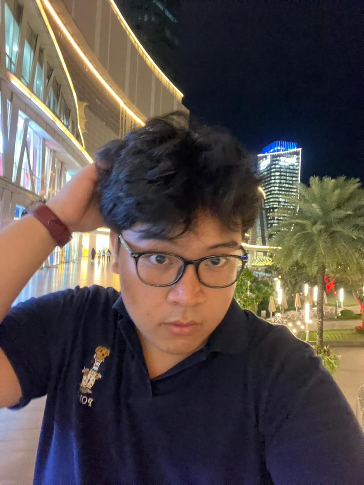

“Learning today, building tomorrow.”
Hello, I'm Yehezkiel Montolalu
Portfolio ini dibuat untuk menampilkan hasil belajar, project kuliah, dan skill yang sedang saya pelajari sebagai mahasiswa IT.

Profil singkat dan nilai yang saya bawa
Saya adalah mahasiswa yang memiliki minat pada bidang teknologi, khususnya dalam pengembangan web dan eksplorasi dunia informatika. Saya senang mempelajari hal-hal baru, memecahkan masalah dengan cara yang kreatif, serta terus mengembangkan kemampuan saya di bidang teknologi digital.
Siapa saya?
Saya adalah mahasiswa Teknik Informatika di Universitas Sam Ratulangi yang memiliki ketertarikan pada dunia teknologi, pemrograman, dan pengembangan web. Saya menikmati proses belajar membuat website yang sederhana, menarik, dan mudah digunakan. Selain belajar di perkuliahan, saya juga suka mengeksplorasi berbagai hal di bidang teknologi secara mandiri. Saya percaya bahwa konsistensi dalam belajar dan mencoba hal baru adalah kunci untuk berkembang di dunia teknologi. Dalam perjalanan belajar saya, saya juga pernah mengikuti berbagai kompetisi seperti robotika SURO CUP yang diselenggarakan oleh UKM Robotika Universitas Sam Ratulangi, serta beberapa kompetisi lain yang membantu saya mengembangkan kemampuan berpikir logis, kreatif, dan strategis.
Dengan pengalaman di proyek tugas dan pembelajaran mandiri, saya fokus pada materi dasar dan eksplorasi konsep baru setiap hari.
Yang bisa Anda temukan di situs ini
- Portofolio dan pengalaman Berisi informasi tentang pengalaman belajar, kompetisi yang pernah saya ikuti, serta beberapa pencapaian yang menjadi bagian dari perjalanan saya.
- Galeri Menampilkan beberapa dokumentasi kegiatan, pengalaman lomba, serta aktivitas yang pernah saya lakukan selama masa sekolah dan perkuliahan.
- Blog dinamis Berisi tulisan tentang pengalaman saya, pembelajaran di dunia teknologi, serta cerita perjalanan saya dalam mengembangkan kemampuan di bidang informatika.
- Kontak Berisi kontak no wa dan gmail saya.
Bagian favorit dari website ini
Setiap bagian dibuat agar pengunjung dapat mengenal saya dengan cara yang singkat, visual, dan mudah dijelajahi.
Gallery
Gallery ini berisi potongan cerita dari perjalanan hidup saya, mulai dari momen pribadi, prestasi, hingga hobi yang saya jalani.
Buka galleryBlog
Berisi artikel singkat yang membantu menunjukkan minat, pengalaman, dan cara saya belajar di bidang web development.
Baca blogKontak
Halaman kontak memudahkan pengunjung untuk meninggalkan pesan dan berinteraksi secara langsung dengan saya.
Hubungi saya